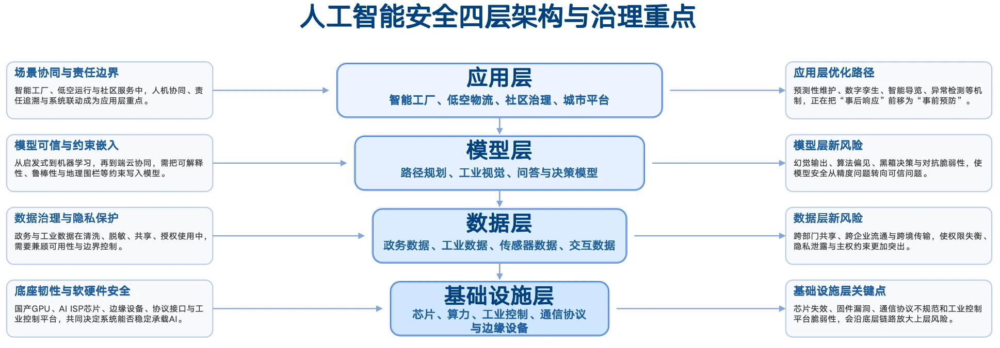
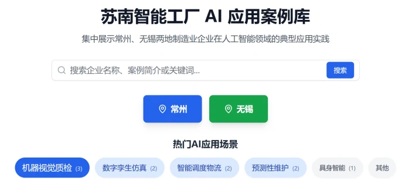
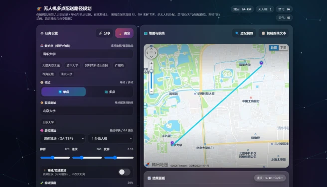
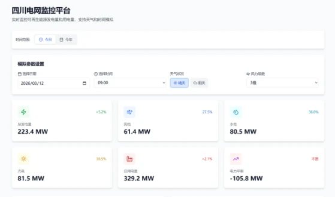
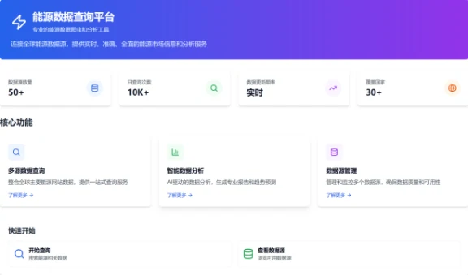

人工智能安全治理：多层风险与共治路径研究
2026年寒假清华大学学生社会实践品牌项目总结报告
人工智能安全治理：多层风险与共治路径研究
内容摘要：在关于“AI+社会治理”的调研中，我们看到人工智能在公共服务、产业升级与基层治理中的广泛渗透，也注意到技术应用在推广过程中不断遭遇隐私泄露、算法失准、系统脆弱性与责任边界不清等反向约束。本期报告由“治理成效”进一步转向“安全问题”，围绕基础设施、数据安全、模型演进与场景应用四个层面，系统梳理人工智能在能源、硬件、数据、算法、工业制造、低空物流、社区治理与智慧城市等场景中的安全风险与优化路径。研究发现，当前人工智能安全治理已经从单点故障防护，转向覆盖硬件、数据、模型、系统与社会影响的复合型治理；从技术实践看，预测性维护、隐私计算、地理围栏、端云协同与异常检测等机制正在显著提升系统安全水平；但与此同时，模型幻觉、算法偏见、黑箱决策、责任归属模糊以及人机关系重构所引发的伦理与法理问题，正构成新的治理挑战。基于此，报告认为，人工智能安全建设不能停留于工程优化与风险补丁，而应进一步迈向以人为中心的治理框架，在伦理准则、法律规范、行业标准与社会共识层面形成协同支撑。
关键词：人工智能安全 基础设施防护 数据治理 模型风险 伦理共治
上一期“E方水土”品牌项目以“AI赋能社会治理现代化”为主题，重点关注人工智能如何进入农业、交通、医疗、养老、社区与产业升级等场景，讨论其在提升治理效率、优化资源配置与拓展服务边界方面的现实价值。其关注重点更多放在AI“能不能用”“怎样落地”“如何推广”上，研究技术如何从试点经验走向规模应用。随着调研不断深入，我们逐渐发现，随着人工智能逐渐深入真实场景，其安全问题就已不再是附属议题，而是直接决定技术能否持续运行、能否取得信任、能否进入制度体系的关键前提。
这一变化不仅仅是研究重心的简单切换，而是对人工智能发展逻辑的进一步推进。社会治理阶段强调的是赋能效果，安全研究阶段则要追问赋能的代价、边界与条件。无论是新型电力系统中的稳定运行，还是智慧城市中的数据流通；无论是低空飞行中的航迹规划，还是社区服务中的模型问答，人工智能一旦与真实物理世界和公共生活链接，安全就不仅局限于设备是否出错、模型是否准确，也涉及个人隐私是否受保护、决策是否可解释、责任是否可追溯、制度是否能兜底。
基于此，本报告在延续既有社会治理观察视角的基础上，将研究重点转入人工智能安全问题，尝试从基础设施、数据治理、模型演进与场景落地四个层面，梳理当下AI安全的现实图景。前四部分分别对应关键设施运行风险、数据流通与隐私保护、模型与算法的动态优化，以及AI在制造、社区与低空经济中的综合性安全表现；在此基础上，后文进一步提炼人工智能安全问题的演进逻辑，并讨论当技术防护不断强化之后，何以仍需回到“人”的主体位置，从伦理、法理、准则与共识层面重构安全治理框架。

图1 人工智能安全四层架构与治理重点
一、重点领域实践分析
（一）基础设施安全：芯片、算力与关键系统的底座防护
基础设施层主要关注支撑人工智能稳定运行的底座条件。芯片、算力平台、工业控制系统、边缘设备、通信协议与能源网络共同构成AI系统的承载基础。一旦底座环节出现脆弱点，上层模型与应用即使设计合理，也可能因算力失稳、接口失配、控制失灵或硬件故障而整体失效。
1．能源系统与算力底座协同安全
四川以水电为主导、风光能源快速发展的能源结构，为新型电力系统建设提供了重要实践场景。然而，可再生能源出力波动大、供需空间错位明显，对电力基础设施运行安全提出更高要求。支队在电子科技大学、清华四川能源互联网研究院以及四川能源发展集团等单位调研发现，人工智能正从发电侧预测、系统调度到设备运维等多个环节提升电力系统的安全稳定性。
在发电侧，AI预测技术成为应对新能源波动的重要工具。电子科技大学相关研究团队通过融合气象、地理及历史发电数据，构建AI时序预测模型，提高风电与光伏发电功率预测精度，从而降低出力波动对电网稳定性的影响。清华四川能源互联网研究院则探索“构网型控制技术”，使新能源设备从传统的“跟网型”升级为能够独立提供电压和频率支撑的“构网型”，在电网扰动情况下仍能维持稳定运行，提升新能源场站对电网安全的支撑能力。
在系统调度层面，数字化平台为电力系统安全运行提供柔性调节能力。倍特数字开发的“倍特数智虚拟电厂平台”通过“数据采集—智能分析—调度控制”的技术架构，实现源、网、荷、储多环节实时监测与协同调度。平台已聚合200余家企业的分布式电力资源，最大可响应约4.65万千瓦调度需求，为区域电网提供重要的灵活调节能力。与此同时，国产GPU厂商沐曦通过自主研发核心芯片和兼容主流生态的软件栈，为能源系统提供本土化算力底座支撑，说明基础设施安全不仅关乎电网设备本身，也关乎底层芯片、算力栈与软件生态是否可控。
在设备运维方面，AI推动电力系统从“被动抢修”向“预测性维护”转变。四川能源发展集团建设的工程数智化管理平台，通过采集设备振动、温度、电流等运行数据，结合历史故障模型识别设备劣化趋势，并将维护安排在发电负荷较低的时段，减少检修带来的发电损失。清华四川能源互联网研究院开发的城市能源系统仿真平台，则利用AI建模对电网运行状态进行模拟分析，实现故障预警与自动巡检，进一步提升电力系统运行安全水平。
调研同时发现，AI在能源基础设施中的应用仍面临一定挑战。例如，深度学习模型的“黑箱”特性使部分决策逻辑难以解释，极端天气或罕见故障场景的样本数据不足也会影响模型泛化能力。此外，不同主体之间系统接口与数据协议缺乏统一标准，跨区域协同调度仍存在一定技术障碍。针对这些问题，实践团队提出将电力系统物理机理与数据驱动模型相结合，探索“机理模型+机器学习”的混合建模方法，并建议由行业主管机构推动统一数据接口与调度标准建设，以提升新型电力系统整体安全水平。
2．芯片、接口与工业控制平台底座韧性
AI基础设施层安全还涉及芯片、算力平台、固件、通信协议以及工业控制平台等更底层的软硬件系统的战略安全。在上海、无锡的调研发现：上海更多呈现的是国产GPU、软件栈与底层研发能力的安全底座，无锡则集中体现智算中心、机房运维、工业控制平台与制造场景之间的承载关系。两地共同说明，基础设施安全并不只是“芯片性能够不够”，还涉及算力是否自主可控、接口是否规范、协议是否稳健、平台是否具备连续运行与故障隔离能力。
在上海，支队调研了沐曦集成电路等单位，看到国产算力底座的安全问题首先体现为芯片与软件生态的可控性。高端GPU不仅决定模型训练与推理效率，更关系到关键系统在外部封锁、生态垄断与供应链波动下能否持续运行。沐曦通过自主研发GPU芯片及MXMACA软件栈，尝试降低对单一国外生态的依赖，并通过兼容主流开发框架来减轻迁移成本。这说明基础设施层的安全，不只是硬件是否可用，也包括驱动、编译、接口与工具链是否能够形成完整、稳定、可维护的本土底座。
在无锡，调研则进一步展示了算力基础设施从“芯片”延伸到“中心”和“平台”的承载逻辑。无锡已建成多个智算中心，形成从芯片、算力中心到上层应用的链条式布局；支队走访尚航云基地时看到，标准化机房、7×24小时运维、万卡级组网趋势与城市智算云平台，共同构成了人工智能稳定运行的物理底座。与此同时，天奇自动化等企业的实践表明，国产算力已经进入具身智能、工业视觉和数字孪生等复杂制造场景，一旦底层算力调度失稳、工业控制接口失配或平台权限管理失当，风险就会从机房快速传导到产线与设备侧。
因此，基础设施安全的重点，不只是提高单一部件性能，而是增强底座整体韧性。一方面，要持续提升芯片、算力中心、边缘终端与工业控制平台的自主可控水平，推动国产软硬件形成更完整的替代能力；另一方面，也要完善机房运维、接口标准、协议规范、权限控制与故障隔离机制，使芯片研发、算力调度、平台运行和制造系统之间形成可追溯、可恢复、可协同的安全闭环。
综合来看，基础设施层的安全议题已经从单点设备防护，扩展为芯片、算力、平台、协议与关键系统协同防护的问题。只有把底座韧性建立起来，后续的数据治理、模型优化与场景落地才有可靠前提。
（二）数据安全：AI驱动数据治理与隐私保护体系建设
在数字化治理体系中，数据既是人工智能运行的重要资源，也是智慧城市建设的重要基础。然而，大规模数据采集与跨部门共享也带来了隐私保护与数据安全风险。烟台与杭州的调研实践分别从政务数据治理与智慧城市建设角度，展示了人工智能在数据安全管理、隐私保护与数据共享机制中的应用探索。
1．政务与工业场景中的数据安全治理
烟台作为全国首批沿海开放城市，在推进“人工智能+”行动中逐步构建起以“中国数港”和城市大脑为核心的数据基础设施体系。随着政务数据和工业数据的跨部门流通日益频繁，数据安全与隐私保护成为智慧城市建设的重要议题。支队通过调研烟台市大数据局、山东渤聚通、睿创微纳等单位，发现当地已形成“技术手段与制度规范相结合”的数据安全治理模式。
在政务数据管理方面，烟台市大数据局建设了贯通市、县、乡、村、网格五级的综合数据平台，实现200余类政务数据在基层治理中的共享与应用。在数据归集过程中，通过自动化清洗、脱敏处理与格式标准化等技术，对姓名、身份证号等敏感信息进行屏蔽处理，确保数据在共享过程中既保持可用性，又避免隐私泄漏。在“无证明城市”建设中，烟台归集数百万条电子证照数据，并通过AI技术实现电子证照的自动核验与授权使用，使办事部门仅能访问办理业务所需的信息，从而有效降低个人隐私暴露风险。
在工业领域，数据安全则更多涉及生产数据的保护与价值利用之间的平衡。山东渤聚通开发的“聚通云化工安全生产云平台”通过物联网传感器与AI视频分析，对化工园区重大危险源进行实时监测和预警。平台采用非侵入式数据采集方式，并结合严格的数据权限管理机制，避免企业核心生产数据外泄。恒远智能科技在建设“产线大脑”系统时，则采用“AI建议—数字孪生验证—人工决策”的协同模式，在发挥AI数据分析优势的同时，通过人工审核确保关键生产数据的安全使用。
在调研过程中，企业普遍关注AI工具普及带来的新型数据安全问题。例如，开发者在使用AI辅助编程时，若过度依赖自动生成代码，可能忽视其中潜在的逻辑漏洞，进而影响工业系统安全运行。针对这一问题，实践团队提出设计“代码安全自检助手”，通过预设提示词模板，引导AI从变量定义、边界条件及潜在漏洞等多个维度对生成代码进行自检，以降低AI使用过程中的安全风险。
2．智慧城市中的数据安全与隐私保护机制
杭州在智慧城市建设方面处于国内领先水平，其“城市大脑”系统自2016年启动以来，已覆盖主城区420平方公里，并在交通治理、政务服务、环境监测等多个领域实现规模化应用。随着城市治理逐步依赖数据驱动决策，数据安全与隐私保护也成为系统建设的重要原则。
在数据采集环节，杭州城市大脑主要通过政务平台与导航应用等渠道获取数据，并严格遵循“最小必要”原则，避免过度收集个人信息。在数据存储与管理方面，系统依托可信数据空间与隐私计算技术，实现数据“可用不可见”，并支持私有化部署，从技术层面保障数据安全。在数据使用环节，通过嵌入行业知识、建立决策回溯机制以及设置人工审核流程，有效降低AI系统可能出现的错误决策风险。
企业层面的技术创新也为数据安全提供了重要支撑。海康威视作为城市感知系统的重要硬件提供方，其摄像头与传感设备广泛部署于城市道路和公共空间，为城市大脑提供大量实时数据。为保障数据传输安全，设备采用加密通信协议，并通过本地化智能分析减少原始数据上传，从而降低数据泄漏风险。部分企业在人形机器人等新型设备研发中，也通过数据分级管理与脱敏处理机制，对采集到的环境与交互数据进行严格保护。
在交通治理领域，杭州交通治理在线平台通过整合多源交通数据构建城市交通知识图谱，实现交通态势识别与拥堵预测。在这一过程中，平台严格遵循“按需授权、最小够用”的数据使用原则，仅向相关治理部门开放必要数据权限，从制度和技术两方面确保数据安全。
尽管如此，智慧城市数据治理仍面临一定挑战，例如跨部门数据共享壁垒以及权限管理精细化程度不足等问题。实践支队建议进一步建设统一的数据治理平台，明确数据流转规则与责任机制，并探索智能体平台在数据管理中的应用，以在保障数据安全的同时提高城市治理效率。
综合烟台与杭州的实践可以看到，数据安全治理正逐渐从单一技术防护转向“技术、制度与治理”协同体系，在保障隐私与安全的前提下实现数据资源的合理流通与价值释放。
（三）模型安全：低空经济场景下的算法优化与学习转型
模型层承接数据并连接应用，是人工智能安全由“信息风险”走向“决策风险”的关键环节。在广州、深圳的调研发现：早期模型多依赖人工规则、启发式搜索与传统运筹优化方法，在静态环境、清晰约束和单一目标下具有较强可控性，但面对低空物流、智能制造等高动态、多扰动场景时，往往难以及时处理环境变化、多机协同与实时冲突，模型的迟滞、局部最优和泛化不足问题随之显现。随着应用复杂度提升，模型开始从规则驱动转向学习驱动，深度学习、多模态感知和强化学习逐步进入路径规划、状态识别与调度优化过程，使系统具备了更强的自适应能力，也推动人工智能从“按既定规则执行”走向“在复杂环境中持续学习”。但模型能力增强并不意味着风险消失。模型幻觉、黑箱决策、训练偏差与鲁棒性不足，正使安全问题从“算得对不对”进一步转向“为什么这样算、在异常情况下是否仍然可靠”。因此，模型安全的重点已不只是提升精度，更在于把可解释性、稳定性、约束机制与人工校核前置到模型设计之中，使学习能力真正服务于安全、可控和可信的系统运行。
（四）应用安全：垂直领域应用综合安全
1．AI+智能工厂：工业视觉、数字孪生与预测性维护
无锡、苏南及长沙等地的调研显示，人工智能已深度嵌入制造业生产环节，其安全治理已从传统的人工作业防护扩展为“感知—分析—预警—处置”的闭环体系。在生产现场，集成AI视觉能力的芯片与设备被广泛应用于PCBA生产、铜管加工、螺丝紧固等关键工序，对线束插接异常、表面氧化缺陷和装配偏差进行自动识别。这类系统显著提升了缺陷检出率，也降低了人为漏检带来的质量和安全风险。与此同时，行业知识开始通过大模型和专家系统进入工艺辅助环节，如焊接参数智能查询等应用，能够帮助一线操作人员快速获取工艺建议，但其前提是模型输出必须建立在可靠标准、可追溯知识源和严格校核机制之上。
在更高层级的生产协同中，数字孪生和预测性维护成为智能工厂安全治理的重要支撑。星星充电、润来科技等案例表明，在虚拟空间进行模拟复现有助于减少非计划停机，避免局部故障演变为系统性风险，推动工厂安全从“故障后处置”转向“运行中预防”。因此，应用层的制造安全并不只是增加若干智能设备，而是通过视觉检测、知识辅助、虚实联动和预测维护共同提升生产过程的稳定性与可控性。
2．AI+社区治理：文化复原、公共服务与数字底座
在社区治理场景中，AI安全问题更多体现为公共服务质量、基层感知能力与居民使用门槛之间的平衡。苏州支队调研发现，人工智能已被用于文化资产保护和社区服务升级，如通过三维扫描与算法复原文物细节，并结合具有人格化交互能力的智能导览系统提升居民和游客的服务体验。在基层治理场景中，集成图像识别算法的监控系统被用于高空抛物、垃圾误投等行为识别，使社区管理逐步从依赖人力转向数字化、实时化响应。以上应用说明，AI能够明显提高社区治理效率，但也意味着数据采集、识别准确率与治理边界需要被同步纳入安全考量。
调研显示，应用安全并不仅取决于系统性能，还取决于居民是否真正理解和善用这些工具。城市居民往往更容易把AI作为导航、咨询和服务助手，而部分乡镇居民在使用中仍受限于提示词能力和数字素养，存在“有工具但不会用”的情况。这表明，社区场景下的安全不仅是防系统失误，还包括降低认知门槛、避免误导使用、维护技术可及性。只有同步推进数字底座建设与公众理解能力，AI在社区治理中的应用才能从“可用”走向“可信”。
3．应用层风险外溢：从可用到可信的场景挑战
从更广义的应用层看，AI风险往往在系统真正落地后集中显现。无论是社区咨询、工业辅助还是低空运行，模型输出错误、责任归属不清和算法不可解释，都会直接影响公众信任与系统稳定。在通用模型参与参数推荐、行为识别或服务问答时，幻觉和偏差可能诱发错误决策；而在涉及公共资源分配、行政处罚或生产控制的情境中，黑盒决策又容易引发公平性和责任承担上的争议。
与此同时，应用层还面临来自物理运行和网络攻击的复合风险。低空飞行等强实时场景高度依赖底层芯片与传感硬件，一旦发生热失控、过流击穿或通信故障，算法层面的优化将难以发挥作用；在AIoT终端广泛部署后，固件漏洞、协议缺陷和数据劫持也可能演变为产线控制权丢失、核心工艺数据泄露等严重后果。因此，应用安全的核心已经不只是“模型能否工作”，而是系统在复杂场景中是否可靠、可解释、可追责并具备抵御外部攻击的能力。
二、基于AI的安全治理的学生实践
综合四个层面的调研可以看到，当前人工智能安全问题已经不再是单一技术环节中的局部漏洞，而是贯穿“基础设施—数据—模型—应用”全链条的系统性议题。针对调研过程中发现的问题，各支队将专业知识与研究结论结合，借助AI赋能的开发工具，聚焦一个具体的社会问题，以实践做出解决问题的尝试。
（一）苏南智能工厂AI应用案例库
在本次实践中，针对苏南地区制造业智能化转型中复合型人才短缺的痛点， 支队自主设计并搭建了“苏南智能工厂AI应用案例库”平台。该平台是一个面 向公众开放的案例检索与展示系统，旨在将调研中收集到的常州、无锡两地企业 在人工智能领域的典型应用实践进行结构化整理与共享。平台基于“案例”数据 表构建，涵盖企业名称、地区、行业、AI应用场景、关键技术、应用成效等核心字段，支持图文混排的富文本详情展示。

图2 苏南智能工厂AI应用案例库
（二）低空经济场景下的智能物流调度系统
基于低空经济场景，支队制作了一个基于K-means聚类与遗传算法（GA）的智能物流调度系统。该系统具有多机订单自动化空间分配、复杂约束下的导航路径解算以及基于强惩罚项的地理围栏硬性闭环功能，实现了在保障空域合规安全的前提下，将整体配送运载效率提升约30%。

图3 低空经济场景下的智能物流调度系统
（三）基于数字孪生的低空安全监测系统
针对无人机低空物流的配送安全风险，支队制作了一个基于Three.js与数字孪生技术的低空安全监测系统。该系统具有环境感知参数化建模、毫秒级空间冲突检测以及多机空域协同态势呈现功能，直观验证AI决策在解决避障“黑盒化”问题上的有效性。
图4 基于数字孪生的低空安全监测系统
（四）能源监测、查询与模拟平台
能源安全是算力安全的基础。支队搭建了四川电网监控、能源数据查询、虚拟电厂模拟器三个平台。其中，四川电网监控平台可以实时监控可再生能源发电量、用电量、对外输电量，并支持天气和时间模拟；能源数据查询平台利用能源数据爬虫和分析工具，连接全球能源数据源，提供实时、准确、全面的能源市场信息和分析服务；虚拟电厂模拟器则以倍特数投虚拟电厂为原型，连接电源端与负荷端，建立智能能源管理与优化调度系统。



图5 四川电网监控平台（上）、能源数据查询平台（左下）
和虚拟电厂模拟器（右下）
三、总结与展望
AI安全已从局部技术问题演变为贯穿“基础设施—数据—模型—应用”全链条的系统问题。基础设施决定系统是否具备稳定承载能力，数据治理关系隐私保护与可信流通，模型演进影响决策质量与约束表达，应用落地则直接检验技术是否真正可靠、可控、可追责。当前各地的共同趋势，是在真实场景中把安全要求逐步写入系统设计，通过底座加固、数据分级、算法约束和场景准入降低风险。
但安全问题并不会因技术优化而自然消失。模型能力增强后，社会对决策正当性、责任边界和价值取向提出了更高要求；系统协同越深入，隐私、公平、解释与问责之间的关系也越复杂。由此可见，下一阶段AI安全治理不能只停留在修补漏洞和提升鲁棒性上，还需要把制度建设、伦理判断与社会共识纳入治理框架，使技术发展始终处于可解释、可监督、以人为中心的轨道之中。
从本次调研可以看到，人工智能安全问题最初常以设备故障、数据泄露、模型误判等形式出现，而当前实践也已形成一批有效回应，包括更稳健的芯片与算力底座、更精细的数据治理、更严格的模型约束以及更贴近场景的风险防控机制。这说明，AI安全正在从被动修补走向主动设计。
但随着技术进一步进入社会运行深处，新的问题也在不断出现：当模型参与公共决策，谁来解释其判断；当系统替代人工经验，人的主体性如何保留；当效率不断提升，公平、尊严与责任是否会被挤压。因此，AI安全治理的最终落点仍应回到“人”。未来除了继续完善工程治理外，更需要在伦理、法理、行业准则与社会共识层面形成更稳定的约束与支撑，使人工智能在可用之外，真正走向可信、可监督与可持续。
四、参考文献
[1] 国务院. (2025年8月26日). 国务院关于深入实施“人工智能+”行动的意见. 国家发展和改革委员会.
[2] 国家新一代人工智能治理专业委员会. (2021年9月25日). 新一代人工智能伦理规范. 中华人民共和国科学技术部.
[3] 国家互联网信息办公室、国家发展和改革委员会、教育部、科学技术部、工业和信息化部、公安部、国家广播电视总局. (2023年7月13日). 生成式人工智能服务管理暂行办法. 中华人民共和国国家互联网信息办公室.